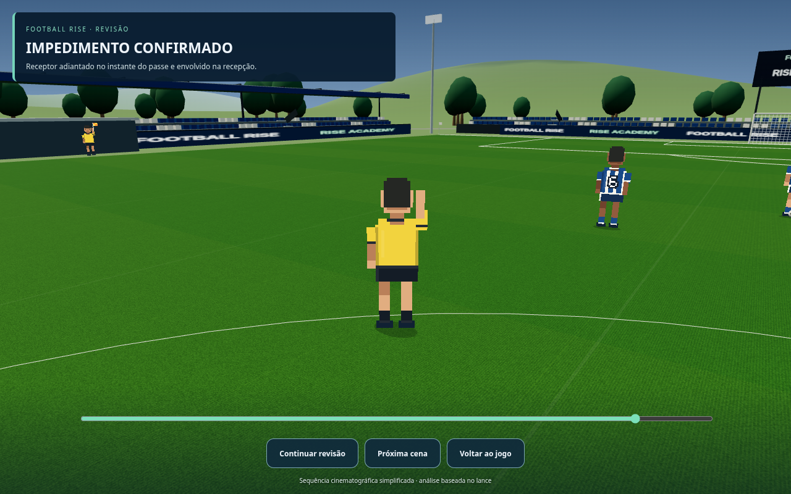
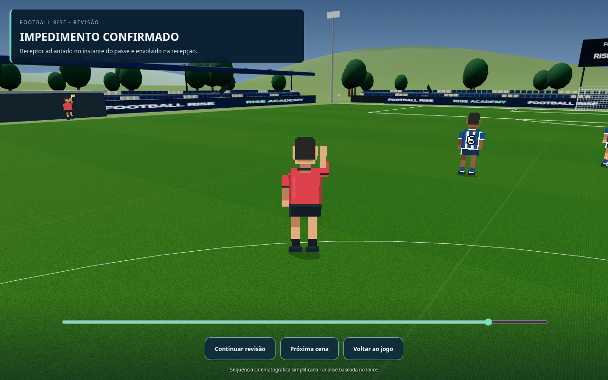

Football Rise — arbitragem sem números e VAR sentado
Prévia para aprovação. Jogo público ainda não atualizado.
Uniforme preto — sem numeração ou inscrições

Uniforme amarelo — sem numeração ou inscrições

Uniforme vermelho — sem numeração ou inscrições

Bandeirinha com roupa lisa

Três profissionais sentados — braços e joelhos dobrados, cadeiras visíveis

Equipe sentada na visualização de celular